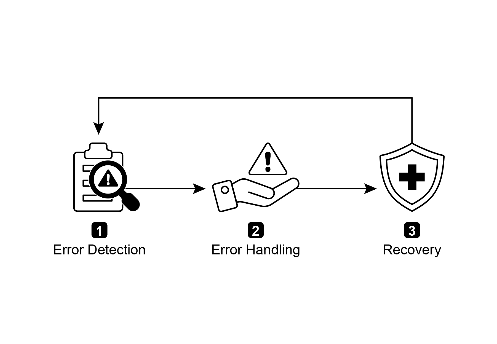
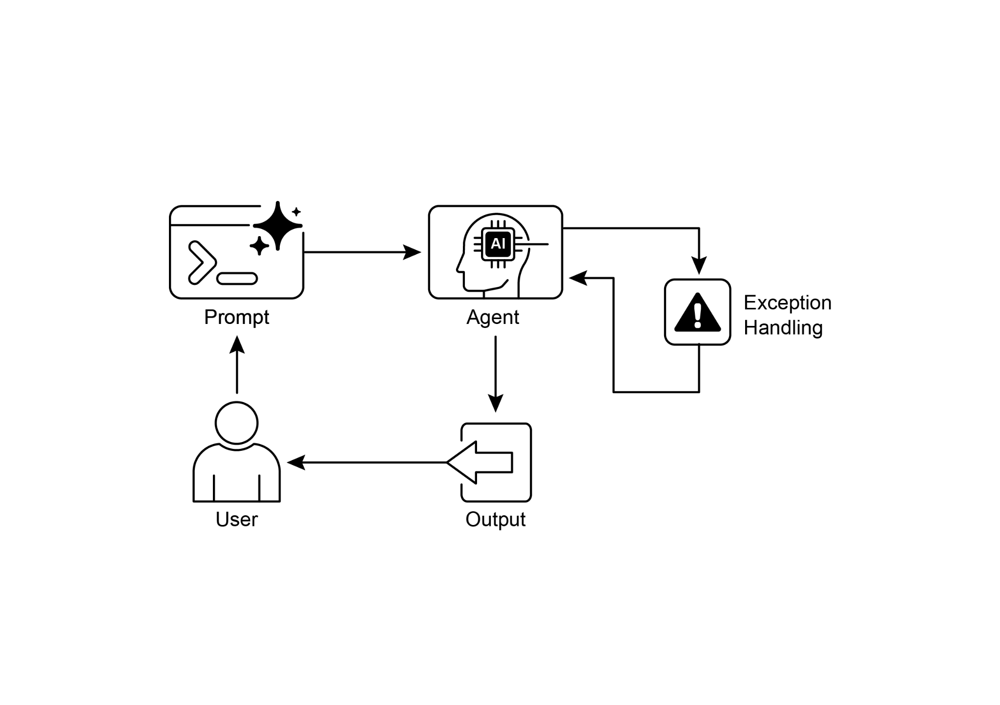

读书 · Agentic Design Patterns · 中英对照
第 12 章 · 异常处理与恢复 Exception Handling and Recovery
Chapter 12: Exception Handling and · 《Agentic Design Patterns》 · Antonio Gulli · 2025
本章讲如何让智能体检测错误、优雅处理并恢复稳定运行，从而在真实环境中保持可靠。
← 返回导读 原书 PDF 上一章:第11章 下一章:第13章
本章要点
① 异常处理分三阶段：错误检测、错误处理、恢复。 ① 处理策略包括日志、重试、回退、优雅降级与通知。 ① 恢复手段包括状态回滚、诊断、自校正与升级人工。 ① 可与反思模式结合，分析失败后改进提示再重试。
本章一图流
错误检测先识别异常与失败信号→策略处理日志重试回退降级通知→状态恢复回滚诊断自校正或升级→反思改进分析失败改提示再重试
异常处理闭环：检测→处理→恢复→反思改进，让智能体稳定可靠。
原书插图


本章划线句
划线句(逐字校验)
"This pattern focuses on developing exceptionally durable and resilient agents that can maintain uninterrupted functionality and operational integrity despite various difficulties and anomalies."
为什么值得划线:点明本章核心目标：构建有韧性的智能体。
划线句(逐字校验)
"It could involve reversing recent changes or transactions to undo the effects of the error (state rollback)."
为什么值得划线:说明状态回滚是恢复阶段的重要手段。
正文(英中对照)
"Chapter 12: Exception Handling and Recovery For AI agents to operate reliably in diverse real-world environments, they must be able to manage unforeseen situations, errors, and malfunctions. Just as humans adapt to unexpected obstacles, intelligent agents need robust systems to detect problems, initiate recovery procedures, or at least ensure controlled failure. This essential requirement forms the basis of the Exception Handling and Recovery pattern. This pattern focuses on developing exceptionally durable and resilient agents that can maintain uninterrupted functionality and operational integrity despite various difficulties and anomalies."
第12章：异常处理与恢复。为了让 AI agent（智能体）能够在多样的真实环境中可靠运行，它们必须能够管理未预见的情况、错误和故障。正如人类会适应意外的障碍，智能体也需要稳健的系统来检测问题、启动恢复流程，或至少确保受控失败。这一基本需求构成了异常处理与恢复模式的基础。该模式专注于开发极其耐用且有韧性的 agent，使其尽管面临各种困难和异常，仍能保持不间断的功能和运行完整性。
导读注:受控失败是底线：agent 可靠性不只靠不出错，更靠出错后可检测、可恢复。
"It emphasizes the importance of both proactive preparation and reactive strategies to ensure continuous operation, even when facing challenges. This adaptability is critical for agents to function successfully in complex and unpredictable settings, ultimately boosting their overall effectiveness and trustworthiness. The capacity to handle unexpected events ensures these AI systems are not only intelligent but also stable and reliable, which fosters greater confidence in their deployment and performance. Integrating comprehensive monitoring and diagnostic tools further strengthens an agent's ability to quickly identify and address issues, preventing potential disruptions and ensuring smoother operation in evolving conditions."
它强调了主动准备与被动策略两者的重要性，以确保即使面对挑战也能持续运行。这种适应性对于智能体（agent）在复杂且不可预测的环境中成功运作至关重要，最终提升其整体有效性和可信度。处理意外事件的能力确保这些 AI 系统不仅智能，而且稳定可靠，从而增强人们对其部署和性能的信心。集成全面的监控与诊断工具进一步加强了智能体快速识别和解决问题的能力，防止潜在中断，并确保在不断变化的条件中更顺畅地运行。
导读注:强调主动准备与被动策略并重，是智能体在不可预测环境中稳定可靠的关键。
"These advanced systems are crucial for maintaining the integrity and efficiency of AI operations, reinforcing their ability to manage complexity and unpredictability. This pattern may sometimes be used with reflection. For example, if an initial attempt fails and raises an exception, a reflective process can analyze the failure and reattempt the task with a refined approach, such as an improved prompt, to resolve the error. Exception Handling and Recovery Pattern Overview The Exception Handling and Recovery pattern addresses the need for AI agents to manage operational failures. This pattern involves anticipating potential issues, such as tool errors or service unavailability, and developing strategies to mitigate them."
这些高级系统对于维护 AI 操作的完整性和效率至关重要，可增强其管理复杂性和不可预测性的能力。该模式有时可与 Reflection 结合使用。例如，如果初次尝试失败并引发异常，反思过程可以分析失败原因，并以改进后的方法（如改进的 prompt）重新尝试任务，从而解决错误。异常处理与恢复模式概述：异常处理与恢复（Exception Handling and Recovery）模式解决了 AI agent 管理操作失败的需求。该模式涉及预判潜在问题（如工具错误或服务不可用），并制定缓解策略。
导读注:强调异常处理与 Reflection 结合，通过改进 prompt 重试来恢复失败任务。
"These strategies may include error logging, retries, fallbacks, graceful degradation, 1 and notifications. Additionally, the pattern emphasizes recovery mechanisms like state rollback, diagnosis, self-correction, and escalation, to restore agents to stable operation. Implementing this pattern enhances the reliability and robustness of AI agents, allowing them to function in unpredictable environments. Examples of practical applications include chatbots managing database errors, trading bots handling financial errors, and smart home agents addressing device malfunctions. The pattern ensures that agents can continue to operate effectively despite encountering complexities and failures."
这些策略可能包括错误日志记录、重试、回退、优雅降级（graceful degradation）1 以及通知。此外，该模式强调恢复机制，如状态回滚、诊断、自我纠正和升级，以将 agent 恢复到稳定运行状态。实现该模式可增强 AI agent 的可靠性和鲁棒性，使其能够在不可预测的环境中运行。实际应用示例包括处理数据库错误的聊天机器人、处理金融错误的交易机器人，以及应对设备故障的智能家居 agent。该模式确保 agent 在遇到复杂情况和失败时仍能继续有效运行。
导读注:该段核心是恢复机制：回滚、诊断、自纠与升级共同保障 agent 稳定运行。
"Fig.1: Key components of exception handling and recovery for AI agents Error Detection: This involves meticulously identifying operational issues as they arise. This could manifest as invalid or malformed tool outputs, specific API errors such as 404 (Not Found) or 500 (Internal Server Error) codes, unusually long response times from services or APIs, or incoherent and nonsensical responses that deviate from expected formats. Additionally, monitoring by other agents or specialized monitoring systems might be implemented for more proactive anomaly detection, enabling the system to catch potential issues before they escalate. Error Handling: Once an error is detected, a carefully thought-out response plan is essential."
图1：AI agent（智能体）异常处理与恢复的关键组件 错误检测：这涉及在运行问题出现时细致地识别它们。这可能表现为无效或格式错误的工具输出、特定 API 错误（如 404（Not Found）或 500（Internal Server Error）状态码）、服务或 API 异常长的响应时间，或偏离预期格式的、不连贯且无意义的响应。此外，还可以实施由其他 agent 或专门监控系统进行的监控，以实现更主动的异常检测，使系统能够在潜在问题升级之前将其捕获。错误处理：一旦检测到错误，精心设计的响应计划至关重要。
导读注:强调错误检测的多源信号与主动监控，是异常恢复的第一环。
"This includes recording error details meticulously in logs for later debugging and analysis (logging). Retrying the action or request, sometimes with slightly adjusted parameters, may be a viable strategy, especially for transient errors (retries). Utilizing alternative strategies or methods (fallbacks) can ensure that some functionality is maintained. Where complete recovery is not immediately possible, the agent can maintain partial functionality to provide at least some value (graceful 2 degradation). Finally, alerting human operators or other agents might be crucial for situations that require human intervention or collaboration (notification)."
这包括在日志中细致记录错误详情以便后续调试与分析（logging）。重试操作或请求，有时略微调整参数，可能是一种可行策略，尤其对瞬时错误（retries）。采用替代策略或方法（fallbacks）可确保维持部分功能。在无法立即完全恢复时，agent 可维持部分功能以至少提供一些价值（graceful 2 degradation）。最后，在需要人工干预或协作的情形下，通知人类操作员或其他 agent可能至关重要（notification）。
导读注:列举 agent 容错五策，降级与通知最易被忽视。
"Recovery: This stage is about restoring the agent or system to a stable and operational state after an error. It could involve reversing recent changes or transactions to undo the effects of the error (state rollback). A thorough investigation into the cause of the error is vital for preventing recurrence. Adjusting the agent's plan, logic, or parameters through a self-correction mechanism or replanning process may be needed to avoid the same error in the future. In complex or severe cases, delegating the issue to a human operator or a higher-level system (escalation) might be the best course of action."
恢复（Recovery）：此阶段旨在使 agent 或系统在发生错误后恢复到稳定且可运行的状态。这可能涉及撤销最近的更改或事务，以消除错误的影响（状态回滚，state rollback）。彻底调查错误原因对于防止再次发生至关重要。可能需要通过自我纠正机制或重新规划（replanning）过程来调整 agent 的计划、逻辑或参数，以避免将来出现同样的错误。在复杂或严重的情况下，将问题委托给人类操作员或更高级别的系统（升级处理，escalation）可能是最佳做法。
导读注:恢复阶段的关键手段：状态回滚、根因调查、重规划，严重时升级给人类。
"Implementation of this robust exception handling and recovery pattern can transform AI agents from fragile and unreliable systems into robust, dependable components capable of operating effectively and resiliently in challenging and highly unpredictable environments. This ensures that the agents maintain functionality, minimize downtime, and provide a seamless and reliable experience even when faced with unexpected issues. Practical Applications & Use Cases Exception Handling and Recovery is critical for any agent deployed in a real-world scenario where perfect conditions cannot be guaranteed. ● Customer Service Chatbots: If a chatbot tries to access a customer database and the database is temporarily down, it shouldn't crash."
实现这种健壮的异常处理与恢复模式，可以将 AI agent（智能体）从脆弱、不可靠的系统转变为健壮、可靠的组件，使其能够在充满挑战且高度不可预测的环境中有效且富有韧性地运行。这确保 agent 保持功能、最大限度减少停机时间，并在遇到意外问题时仍能提供无缝且可靠的体验。实际应用与用例：异常处理与恢复对于任何部署在无法保证完美条件的真实场景中的 agent 都至关重要。● 客户服务聊天机器人：如果聊天机器人尝试访问客户数据库而数据库暂时不可用，它不应崩溃。
导读注:强调异常处理让 agent 在不可预测环境中保持健壮可靠，并以客服机器人为例。
"Instead, it should detect the API error, inform the user about the temporary issue, perhaps suggest trying again later, or escalate the query to a human agent. ● Automated Financial Trading: A trading bot attempting to execute a trade might encounter an "insufficient funds" error or a "market closed" error. It needs to handle these exceptions by logging the error, not repeatedly trying the same invalid trade, and potentially notifying the user or adjusting its strategy. ● Smart Home Automation: An agent controlling smart lights might fail to turn on a light due to a network issue or a device malfunction."
相反，它应当检测到 API 错误，告知用户这一临时性问题，或许建议稍后重试，或将查询升级转交给人工客服。● 自动化金融交易：尝试执行交易的交易机器人可能会遇到“资金不足”错误或“市场已关闭”错误。它需要处理这些异常，方式是记录错误、不反复尝试同一笔无效交易，并可能通知用户或调整其策略。● 智能家居自动化：控制智能灯的 agent 可能因网络问题或设备故障而无法打开灯光。
导读注:强调 agent 遇错应检测、告知、升级，而非盲目重试。
"It should detect this failure, perhaps retry, and if still unsuccessful, notify the user that the light could not be turned on and suggest manual intervention. ● Data Processing Agents: An agent tasked with processing a batch of documents might encounter a corrupted file. It should skip the corrupted file, log the error, continue processing other files, and report the skipped files at the end rather than halting the entire process. 3 ● Web Scraping Agents: When a web scraping agent encounters a CAPTCHA, a changed website structure, or a server error (e.g., 404 Not Found, 503 Service Unavailable), it needs to handle these gracefully."
它应检测到这一失败，或许进行重试，若仍不成功，则通知用户灯无法打开，并建议人工干预。● 数据处理代理（Data Processing Agents）：负责处理一批文档的代理可能遇到损坏的文件。它应跳过损坏文件、记录错误、继续处理其他文件，并在最后报告被跳过的文件，而不是中止整个流程。3 ● 网页抓取代理（Web Scraping Agents）：当网页抓取代理遇到 CAPTCHA、网站结构变更或服务器错误（如 404 Not Found、503 Service Unavailable）时，需要优雅地处理这些情况。
导读注:强调代理应优雅降级而非整体中止，并给出三类代理的容错策略。
"This could involve pausing, using a proxy, or reporting the specific URL that failed. ● Robotics and Manufacturing: A robotic arm performing an assembly task might fail to pick up a component due to misalignment. It needs to detect this failure (e.g., via sensor feedback), attempt to readjust, retry the pickup, and if persistent, alert a human operator or switch to a different component. In short, this pattern is fundamental for building agents that are not only intelligent but also reliable, resilient, and user-friendly in the face of real-world complexities. Hands-On Code Example (ADK) Exception handling and recovery are vital for system robustness and reliability. Consider, for instance, an agent's response to a failed tool call."
这可能涉及暂停、使用代理，或报告失败的具体 URL。● 机器人与制造业：执行装配任务的机械臂可能因未对准而无法拾取组件。它需要检测此失败（例如通过传感器反馈），尝试重新调整、重试拾取，若持续失败，则提醒人工操作员或切换到其他组件。简言之，该模式对于构建不仅智能、而且在面对现实世界复杂性时可靠、有韧性且用户友好的 agent 至关重要。动手代码示例（ADK）异常处理与恢复对系统健壮性和可靠性至关重要。例如，考虑 agent 对失败的工具调用（tool call）的响应。
导读注:强调异常处理与恢复是 agent 可靠性的关键，并以机械臂与工具调用为例。
"Such failures can stem from incorrect tool input or issues with an external service that the tool depends on. from google.adk.agents import Agent, SequentialAgent # Agent 1: Tries the primary tool. Its focus is narrow and clear. primary_handler = Agent( name="primary_handler", model="gemini-2.0-flash-exp", instruction=""" Your job is to get precise location information. Use the get_precise_location_info tool with the user's provided address."
这类失败可能源于工具输入错误，或工具所依赖的外部服务出现问题。from google.adk.agents import Agent, SequentialAgent # Agent 1: Tries the primary tool. Its focus is narrow and clear. primary_handler = Agent( name="primary_handler", model="gemini-2.0-flash-exp", instruction=""" Your job is to get precise location information. Use the get_precise_location_info tool with the user's provided address.
导读注:指出工具调用失败的两大根源：输入错误或外部服务问题。
"""", tools=[get_precise_location_info] ) # Agent 2: Acts as the fallback handler, checking state to decide its action. fallback_handler = Agent( name="fallback_handler", model="gemini-2.0-flash-exp", instruction=""" Check if the primary location lookup failed by looking at state["primary_location_failed"]. - If it is True, extract the city from the user's original query and use the get_general_area_info tool. - If it is False, do nothing. """, 4 tools=[get_general_area_info] ) # Agent 3: Presents the final result from the state. response_agent = Agent( name="response_agent", model="gemini-2.0-flash-exp", instruction=""" Review the location information stored in state["location_result"]."
", tools=[get_precise_location_info] ) # Agent 2：作为回退处理器（fallback handler），检查状态以决定其动作。fallback_handler = Agent( name="fallback_handler", model="gemini-2.0-flash-exp", instruction=""" 通过查看 state["primary_location_failed"] 检查主要位置查询是否失败。 - 如果为 True，则从用户的原始查询中提取城市，并使用 get_general_area_info 工具。 - 如果为 False，则不执行任何操作。 """, 4 tools=[get_general_area_info] ) # Agent 3：呈现状态中的最终结果。response_agent = Agent( name="response_agent", model="gemini-2.0-flash-exp", instruction=""" 查看存储在 state["location_result"] 中的位置信息。
导读注:展示多 Agent 协作：回退处理器依据状态标志决定是否补救查询。
"Present this information clearly and concisely to the user. If state["location_result"] does not exist or is empty, apologize that you could not retrieve the location. """, tools=[] # This agent only reasons over the final state. ) # The SequentialAgent ensures the handlers run in a guaranteed order. robust_location_agent = SequentialAgent( name="robust_location_agent", sub_agents=[primary_handler, fallback_handler, response_agent] ) This code defines a robust location retrieval system using a ADK's SequentialAgent with three sub-agents. The primary_handler is the first agent, attempting to get precise location information using the get_precise_location_info tool."
向用户清晰简洁地呈现此信息。如果 state["location_result"] 不存在或为空，则致歉说明无法检索到位置。"""，tools=[] # 该 agent 仅对最终状态进行推理。）# SequentialAgent 确保各处理器按保证的顺序运行。robust_location_agent = SequentialAgent( name="robust_location_agent", sub_agents=[primary_handler, fallback_handler, response_agent] ) 这段代码使用 ADK 的 SequentialAgent 及三个子 agent 定义了一个健壮的位置检索系统。primary_handler 是第一个 agent，尝试使用 get_precise_location_info 工具获取精确的位置信息。
导读注:展示如何用 SequentialAgent 编排主处理器、回退处理器与响应 agent，构建健壮的位置检索流程。
"The fallback_handler acts as a backup, checking if the primary lookup failed by inspecting a state variable. If the primary lookup failed, the fallback agent extracts the city from the user's query and uses the get_general_area_info tool. The response_agent is the final agent in the sequence. It reviews the location information stored in the state. This agent is designed to present the final result to the user. If no location information was found, it apologizes. The SequentialAgent ensures that these three agents execute in a predefined order. This structure allows for a layered approach to location information retrieval."
fallback_handler（回退处理器）充当备份，通过检查状态变量来判断主查找是否失败。如果主查找失败，回退 agent 会从用户查询中提取城市，并使用 get_general_area_info 工具。response_agent 是序列中的最后一个 agent。它会审查存储在状态中的位置信息。该 agent 旨在向用户呈现最终结果。如果未找到任何位置信息，它会表示歉意。SequentialAgent 确保这三个 agent 按预定义顺序执行。这种结构允许对位置信息检索采用分层方法。
导读注:回退机制与顺序编排结合，实现分层的位置信息检索。
"At a Glance What: AI agents operating in real-world environments inevitably encounter unforeseen situations, errors, and system malfunctions. These disruptions can range from tool failures and network issues to invalid data, threatening the agent's ability to complete its tasks. Without a structured way to manage these problems, agents can be fragile, unreliable, and prone to complete failure when faced with unexpected 5 hurdles. This unreliability makes it difficult to deploy them in critical or complex applications where consistent performance is essential. Why: The Exception Handling and Recovery pattern provides a standardized solution for building robust and resilient AI agents."
概览 是什么：在真实环境中运行的 AI agent（智能体）不可避免地会遇到未预见的情况、错误和系统故障。这些干扰可能从工具故障、网络问题到无效数据不等，威胁 agent 完成任务的能力。如果没有结构化的方式来管理这些问题，agent 在面对意外障碍时可能变得脆弱、不可靠，并容易彻底失败。这种不可靠性使得难以将它们部署在需要一致性能的关键或复杂应用中。为什么：异常处理与恢复（Exception Handling and Recovery）模式为构建健壮且有弹性的 AI agent 提供了标准化解决方案。
导读注:点出 agent 在真实环境中的脆弱性，以及异常处理与恢复模式作为标准化解决方案的价值。
"It equips them with the agentic capability to anticipate, manage, and recover from operational failures. The pattern involves proactive error detection, such as monitoring tool outputs and API responses, and reactive handling strategies like logging for diagnostics, retrying transient failures, or using fallback mechanisms. For more severe issues, it defines recovery protocols, including reverting to a stable state, self-correction by adjusting its plan, or escalating the problem to a human operator. This systematic approach ensures agents can maintain operational integrity, learn from failures, and function dependably in unpredictable settings."
这赋予它们代理能力（agentic capability），以预见、管理并从运行故障中恢复。该模式涉及主动错误检测，例如监控工具输出和 API 响应，以及被动处理策略，如记录日志用于诊断、重试瞬时故障或使用回退机制。对于更严重的问题，它定义了恢复协议，包括回退到稳定状态、通过调整计划进行自我纠正，或将问题上报给人类操作员。这种系统化方法确保代理能够维持运行完整性、从失败中学习，并在不可预测的环境中可靠运行。
导读注:核心是让代理具备预见、管理、恢复故障的完整能力闭环。
"Rule of thumb: Use this pattern for any AI agent deployed in a dynamic, real-world environment where system failures, tool errors, network issues, or unpredictable inputs are possible and operational reliability is a key requirement."
经验法则：对于部署在动态、真实世界环境中的任何 AI agent（智能体），只要可能出现系统故障、工具错误、网络问题或不可预测的输入，并且运行可靠性是关键要求，就使用此模式。
导读注:运行可靠性是选用该模式的核心判据。
"Visual summary 6 Fig.2: Exception handling pattern Key Takeaways Essential points to remember: ● Exception Handling and Recovery is essential for building robust and reliable Agents. ● This pattern involves detecting errors, handling them gracefully, and implementing strategies to recover. ● Error detection can involve validating tool outputs, checking API error codes, and using timeouts. ● Handling strategies include logging, retries, fallbacks, graceful degradation, and notifications. ● Recovery focuses on restoring stable operation through diagnosis, self-correction, or escalation. ● This pattern ensures agents can operate effectively even in unpredictable real-world environments. 7"
视觉摘要 6 图2：异常处理模式 关键要点 需要记住的要点：● 异常处理与恢复（Exception Handling and Recovery）对于构建健壮可靠的 Agent 至关重要。● 该模式涉及检测错误、优雅地处理错误，并实施恢复策略。● 错误检测可包括验证工具输出、检查 API 错误码以及使用超时。● 处理策略包括日志记录、重试、回退、优雅降级和通知。● 恢复侧重于通过诊断、自我纠正或升级来恢复稳定运行。● 该模式确保 Agent 即使在不可预测的现实环境中也能有效运行。7
导读注:异常处理与恢复是构建可靠 Agent 的关键模式，涵盖检测、处理与恢复三环节。
结论 Conclusion
"This chapter explores the Exception Handling and Recovery pattern, which is essential for developing robust and dependable AI agents. This pattern addresses how AI agents can identify and manage unexpected issues, implement appropriate responses, and recover to a stable operational state. The chapter discusses various aspects of this pattern, including the detection of errors, the handling of these errors through mechanisms such as logging, retries, and fallbacks, and the strategies used to restore the agent or system to proper function. Practical applications of the Exception Handling and Recovery pattern are illustrated across several domains to demonstrate its relevance in handling real-world complexities and potential failures."
本章探讨异常处理与恢复（Exception Handling and Recovery）模式，该模式对于开发健壮且可靠的 AI 智能体至关重要。此模式解决 AI 智能体如何识别和管理意外问题、实施适当的响应，并恢复到稳定运行状态。本章讨论该模式的各个方面，包括错误检测、通过日志记录、重试和回退等机制处理这些错误，以及用于将智能体或系统恢复到正常功能的策略。异常处理与恢复模式的实际应用在多个领域中进行了说明，以展示其在处理现实世界复杂性和潜在故障方面的相关性。
导读注:异常处理与恢复是构建可靠 AI 智能体的关键模式，涵盖检测、处理与恢复三环节。
"These applications show how equipping AI agents with exception handling capabilities contributes to their reliability and adaptability in dynamic environments. References 1. McConnell, S. (2004). Code Complete (2nd ed.). Microsoft Press. 2. Shi, Y., Pei, H., Feng, L., Zhang, Y., & Yao, D. (2024). Towards Fault Tolerance in Multi-Agent Reinforcement Learning. arXiv preprint arXiv:2412.00534. 3. O'Neill, V. (2022). Improving Fault Tolerance and Reliability of Heterogeneous Multi-Agent IoT Systems Using Intelligence Transfer. Electronics, 11(17), 2724. 8"
这些应用展示了为 AI agent 配备异常处理能力如何有助于其在动态环境中的可靠性与适应性。参考文献 1. McConnell, S. (2004). Code Complete (2nd ed.). Microsoft Press. 2. Shi, Y., Pei, H., Feng, L., Zhang, Y., & Yao, D. (2024). Towards Fault Tolerance in Multi-Agent Reinforcement Learning. arXiv preprint arXiv:2412.00534. 3. O'Neill, V. (2022). Improving Fault Tolerance and Reliability of Heterogeneous Multi-Agent IoT Systems Using Intelligence Transfer. Electronics, 11(17), 2724. 8
导读注:点明异常处理是 agent 可靠性与适应性的关键，并附三篇容错相关文献。
来源与用途
《Agentic Design Patterns》,Antonio Gulli · 2025 · 原书 PDF。本页为学习用途的对照整理,版权归原作者;有问题到读书导师处提问,答案只引用书中原文并标注章节。
← 第11章 · 目标设定与监控 Goal Setting and Monitoring 导读 第13章 · 人在回路 Human-in-the-Loop →